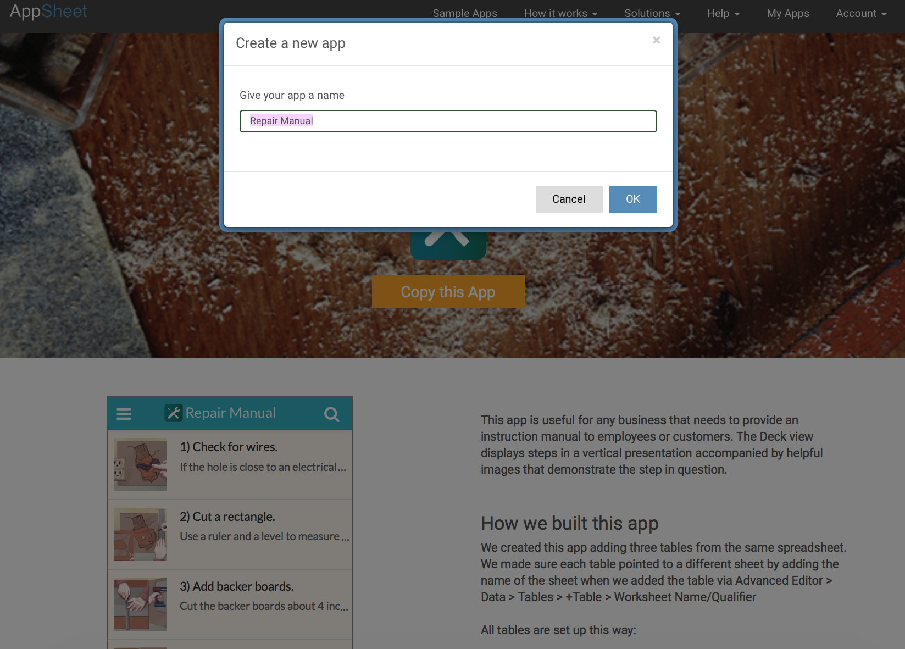
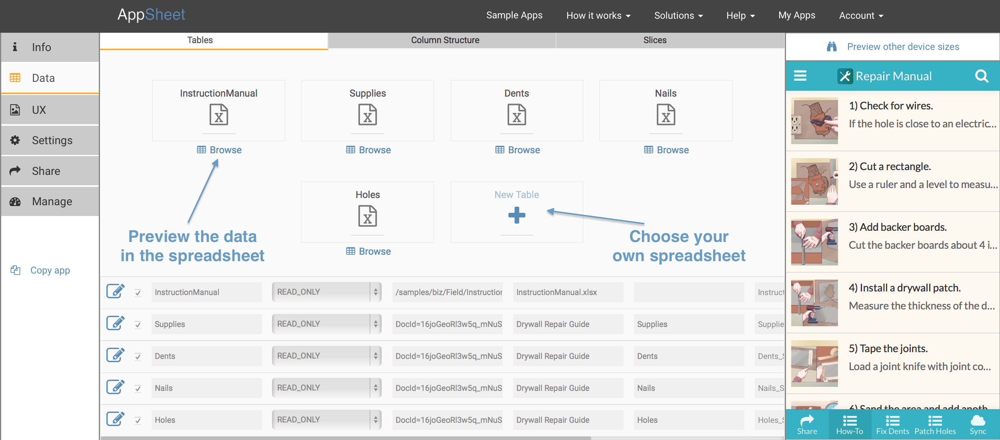
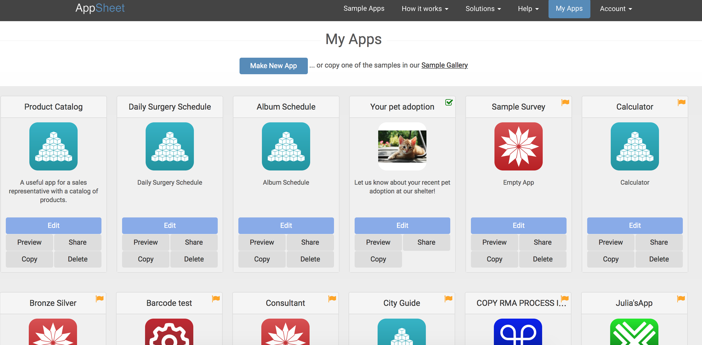
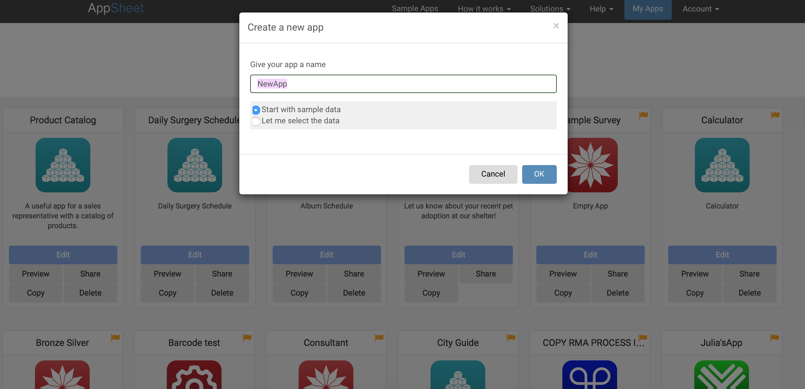
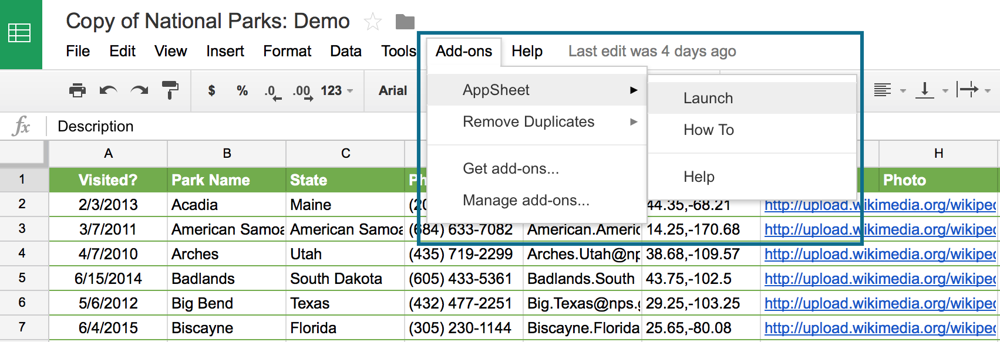
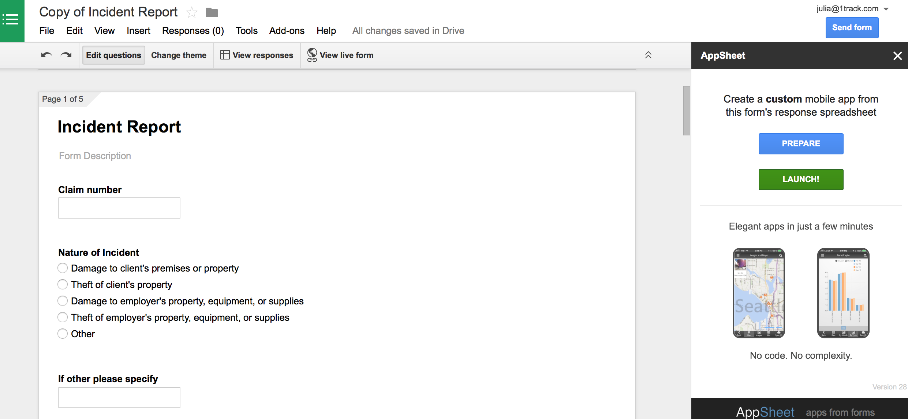
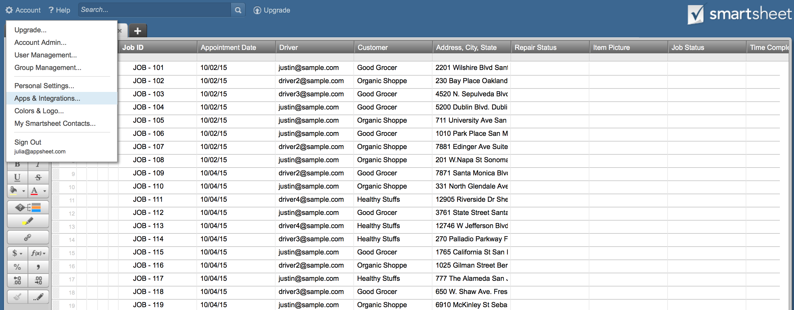
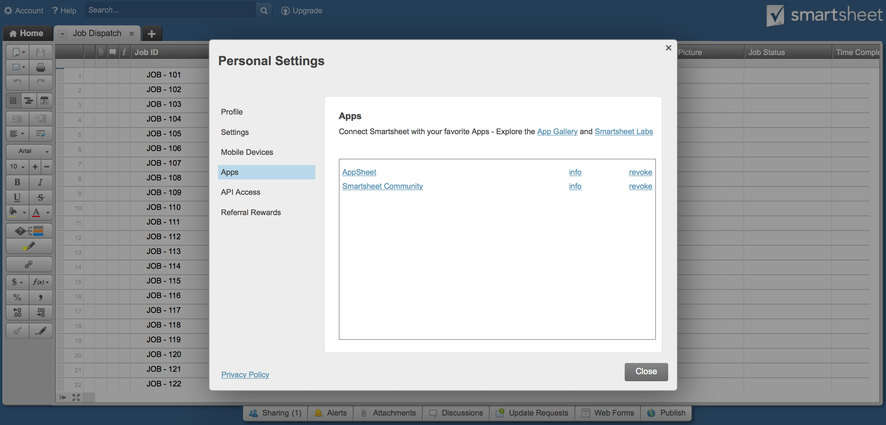
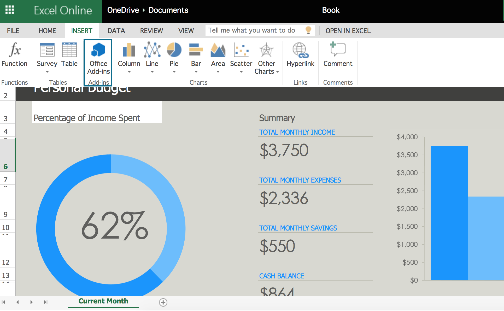
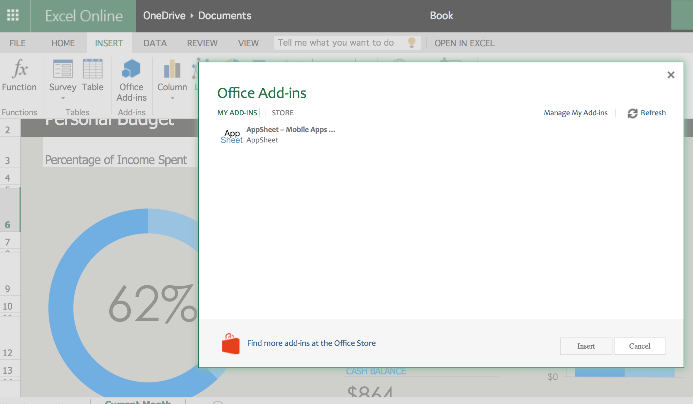

Create an app – AppSheet
There are a few ways to create an app.
1. Start with a sample
You can always start by copying a sample app from our template gallery. Just open any app and click Copy at the top. You'll get the option to rename the app.

Here's what AppSheet actually does when you click the OK button:
- Creates a folder for this app at [cloud provider]/AppSheet/data/[appName].
- Copies the spreadsheet(s) used by the app into this folder.
- Generates a mobile app automatically from the spreadsheet(s).
You now have full access to the spreadsheet that was used to create this app. You can either replace it with your own data or switch to another spreadsheet. Note: when you copy an app, you do not get a copy of the icons and logos-- you will need to add those later.
Once you've clicked Ok, you're now taken to AppSheet's Editor tool where you'll customize your app. AppSheet has a Basic and Advanced Editor-- some apps can use both, and others are too complex for the Basic Editor. We will expand more on that later, but for now, we've landed in the Basic Editor.
From here, play around with the Basic Editor. You can preview the data in the spreadsheet, navigate to the spreadsheet itself, or switch to a new spreadsheet.

Note: if you switch to your own spreadsheet, you will need to click Refresh column structure so AppSheet expects the column structure of the new spreadsheet.
2. Make a new app
To make a new app, click the My apps tab at the top. Then click Make New App.

You'll see a window where you can name your new app and decide whether to use sample data or to select your own. Starting with sample data might be a good idea if you're not sure how to structure your spreadsheet or if you'd like to see how data in a pre-existing spreadsheet shows in an app. If you choose to select your own, you will see a popup window which will allow you to choose the spreadsheet from your cloud provider. Either way, you always have the option in the app Editors to switch to another spreadsheet.

3. Create apps with AppSheet's Google Apps add-ons
Google Sheets
You can use AppSheet's add-on for Google Sheets to turn your Sheets into mobile apps. This is the easiest way to create apps if you're using Google Sheets.
- It's best to start with a Google Sheet that already has some data. AppSheet works best when it has at least a couple of rows of well-structured data to work with.
- From your Google Sheet, click Add-ons -> Get Add-ons -> then install AppSheet (it's free). Then click Add-ons again --> AppSheet.

3. A pane will appear to the right. Click "Go"-- AppSheet will automatically generate a mobile app from your data.

4. You are now taken to a browser tab on www.appsheet.com where you can edit and refine your app. Data in the app and the spreadsheet always stay in sync.
Google Forms
The Google Forms AppSheet add-on works much the same way as Google Sheets, with one exception. In order to interpret the Form data and allow you to see responses, Google produces a 'response' Google Sheet for each Form. This spreadsheet is what AppSheet uses to generate a mobile app. This is the easiest way to create apps if you're using Google Forms.
- Start with a Google Form where you've added a few form questions.
- From your Google Sheet, click Add-ons -> Get Add-ons -> then install AppSheet (it's free). Then click Add-ons again --> AppSheet.
- Click 'Prepare' in the add-on pane. After a few seconds, the 'Launch' button will be enabled. Click on 'Launch' -- AppSheet will automatically create a mobile app that has a similar mobile form.
- You are now taken to the app Editor on appsheet.com where you can customize your app. Note: If you make changes to your form after already having created an app, you need to go back through the Prepare and Launch steps in the add-on pane so that AppSheet can recognize the changes.
Google Docs
The Google Docs AppSheet add-on is the fastest way to turn your paper-based forms into mobile apps because you can instantly create an app using a Google Doc that contains placeholders.
The add-on will let you build a Google Doc template with input placeholders that you can update via a mobile app. Additionally, every time a response is submitted, you get a copy of the completed template via Email and as a PDF.
- Create a document with placeholders for input fields. Any word that has around it is an input placeholder. AppSheet will turn those placeholders into columns of a response sheet and create a mobile app where you can insert the values for the placeholder, which will then be sent to you via email and as a PDF.
- Launch the AppSheet add-on from the add-ons menu.
- Click "Prepare" an then "Launch" from within the AppSheet sidebar.
- You are now taken to the app Editor on appsheet.com where you can customize your app.
4. Create apps with AppSheet's Smartsheet and Office 365 integrations
Smartsheet
Smartsheet's integration with AppSheet allows you to easily navigate from your Smartsheet to AppSheet, but isn't a formal add-on and requires you to navigate the "make a new app" process as described above in step 2.
You can either:
A. sign into AppSheet directly with your Smartsheet account, and then select data from that account; or,
B. install AppSheet's integration from Smartsheet's App Gallery. Once you install AppSheet (by logging into AppSheet with your Smartsheet account from the browser popup), from there you can create apps directly from your Smartsheets by clicking the Account menu at the top, then "Apps and Integrations".

You'll see AppSheet:

Clicking the link will take you to www.appsheet.com where you can then log in via Smartsheet and upload your Smartsheet data.
Office 365
AppSheet's add-in for Office 365 works much the same as the Google Forms, Google Docs, and Google Sheets add-ons. If you're working from an Excel file, you can add AppSheet's add-in from the Office 365 store.
- From the "Insert" menu, click "Office Add-ins". To find AppSheet, search the store. If you've already added AppSheet, just double click the AppSheet icon. The add-in pane will appear to the right.  
- When you're ready to make an app, click "Go" on the pane.
- You are now taken to the app Editor on appsheet.com where you can customize your app.
What's next?
Whether you've chosen sample data, made a new app from your own data, or used AppSheet's Google, Smartsheet, or Office 365 integrations, you will be taken to a page where you can use the Basic or Advanced Editors to customize your app as well as view your live app in action.
In the next section, we'll dive into the Basic and Advanced Editors, where you can make rich customizations to your app.